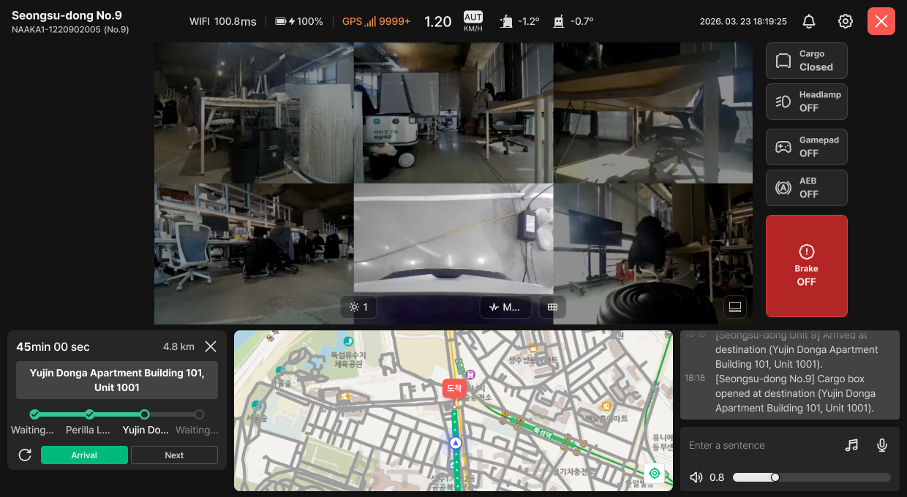
Remote Control Screen
When you connect to a robot, the remote control screen opens. This guide walks you through each area of the screen — what to look at, and when to press what. The numbers on each screen image match the numbered descriptions below it.
01 · Screen Layout
Screen Overview
The remote control screen is split into the header, video, robot control buttons, and the Mission · Map · Log (voice) areas at the bottom. The numbers on the image match the chapter numbers in this guide.
Based on Layout A. Numbers indicate chapters.
Top Header
The connected robot's info and its network · battery · tilt · speed status. → Ch. 02
Video Area
Camera grid and the brightness · quality · layout toolbar. → Ch. 03
Robot Control Buttons
Cargo box · headlamp · gamepad · auto-stop · brake. → Ch. 03
Mission Panel
Mission progress and step buttons. → Ch. 04
Map
Robot location · route · destination. → Ch. 04
Log & Voice Broadcast
Event history and robot speaker broadcast. → Ch. 05
01 · Screen Layout
Layouts A · B
Pick whichever of two layouts suits you. Press the layout button at the bottom right of the video to switch anytime; your choice stays even if you resize the window.
Layout A — Video on Top · Three Panels Below
Shows the video wide across the top, with Mission · Map · Log side by side below. Good for watching the drive while keeping the map and log in view.
Layout B — Video Left · Side Panel Right
Shows the video large on the left, with Mission · Log · crossing prompts stacked in the right panel. Robot control buttons sit below the video. Good for narrow paths or night driving, when you need a bigger video.
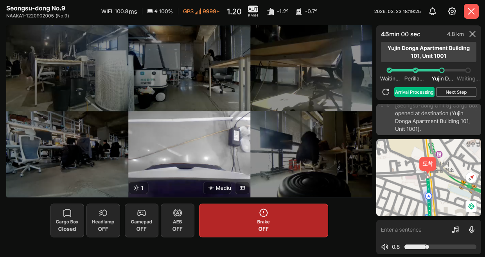
02 · Status
Top Header
The header shows the connected robot's status at a glance. The left shows robot info, the center shows network · battery · tilt · speed, and the right has the Notification Center · Settings · Disconnect buttons.

Robot Name · Serial No. · Unit No.
The connected robot's name, serial number, and unit number. First check that you're connected to the right robot.
Network Latency
The robot's connection (WIFI / LTE) and response delay in ms. The color changes as the delay grows.
- Normal · under 200ms
- Caution · 200ms or more
- Warning · 500ms or more — controls respond noticeably late; drive with care.
Battery · Charging Status
Remaining battery and charging status. The icon next to the battery shows whether it's wired or wireless, and whether it's actually charging.
- Not charging (including overcharge)

- Wired charging in progress

- Wired connected, but charging hasn't started

- Wireless charging in progress

- Wirelessly docked, but charging hasn't started

- At 20% or below, it turns red.

- When the robot disconnects, the battery is hidden.
GPS Reception
Shows GPS reception quality with signal bars and a numeric value. Lower values mean better reception.
| Value | Status | Display |
|---|---|---|
| 0 – 14 | Good signal | |
| 15 – 250 | Signal present | |
| 251 – 9999 | Weak signal | |
| 10000 ~ | No GPS signal |  |
Driving Speed & Control Mode
Shows real-time driving speed (KM/H) and who is currently in control.
- Auto (AUT) Robot is driving on its own
- Control (CTL) Being driven remotely
Setting Speed and Rotation Speed are shown alongside. - On-site (OP) Being driven directly on site
Pitch & Roll (Robot Attitude)
Shows how far the robot is tilted front-to-back and side-to-side, in degrees.
Tilt Direction
| Item | Meaning | + / − |
|---|---|---|
| Pitch(Y) | Front-back tilt | Uphill + / downhill − |
| Roll(X) | Side tilt | Right + / left − |
Status by Angle
| Status | Angle | What to do |
|---|---|---|
| Normal | Under ±7° | — |
| Warning | ±7° to under ±10° | Check whether the robot is on a slope or curb. |
| Danger | ±10° or more | Risk of tipping over. Stop immediately and check the surroundings. |
- While loading, or if robot data can't be received,
-is shown instead of the angle.
Last Update Time
The time the robot's status values were last refreshed.
- If there is no update for 5 seconds or more, the time is highlighted — this means the robot's data isn't coming in.
Notification Center
Press to open the Notification Center and review past alerts by level.
Robot Settings
Click to open the ‘Robot Settings’ side panel on the right. → Ch. 07
Disconnect
Press to disconnect from the robot and return to the monitoring screen. Use this to leave the remote control screen.
03 · Video & Controls
Video Area & Camera Controls
This area shows the robot's camera feeds combined in a grid. Adjust brightness · quality · arrangement with the toolbar at the bottom center of the video.

Camera Grid
Combines the robot's camera feeds on one screen. Front · right · left · bottom · rear views are joined in a grid to read as a single field of view.
- If just one camera freezes or breaks, you can restart only that camera in Robot Settings. → 7-4
Brightness
Adjusts video brightness. Use it to check the road surface and obstacles during night driving or in backlit sections.
Video Quality
Adjusts video quality. When network latency (1-2) grows and the video lags, try lowering the quality.
Camera Grid
Changes which cameras are shown in the video area.
- 6 cams · view front · right · left · bottom · rear together
- Front cam · view only the front camera, enlarged
Layout Switch
Switches the arrangement of the video and panels between Layout A ↔ B. → Ch. 01
Control Screen Not Connected
If the video doesn't connect at all, try the following in order.
- Lower the video quality on the control screen → Restart Control Screen → click the LDM button in the remote program
- If it still doesn't work, Restart XAVIER → then Reboot Robot
03 · Video & Controls
Robot Control Buttons
Buttons for directly operating the robot's cargo box, lights, brake and more. Each button shows its current state, so check it before pressing. In Layout A they are to the right of the video; in Layout B, below it.
Cargo Box
Opens and closes the cargo box. The button shows the Closed / Open current state. Driving with the cargo box open triggers the alert “[Cargo Box Caution] The cargo box is open. Please close the cargo box.”
Headlamp
Turns the robot's front light on and off. Use it to secure video visibility at night or in dark indoor sections.
Gamepad
Enables input so you can drive directly with a gamepad connected to the control PC. Pad input reaches the robot only when ON.
Auto-Stop
While you are driving the robot remotely, it stops automatically when it detects an obstacle or a step.
- To get through the spot where it stopped, first check that the area is safe and find a way around, then turn it OFF.
- Once you're through, turn it back ON.
- It turns ON automatically whenever you switch to remote driving.
Brake
Holds the robot in place. Unlike the other buttons, it is prominently highlighted in red so you can find it immediately in an emergency.
- When ON, the robot won't move under autonomous or manual driving.
04 · Missions
Mission Panel
Shows the progress of the current delivery mission and lets the operator advance each step directly.
Mission in progress
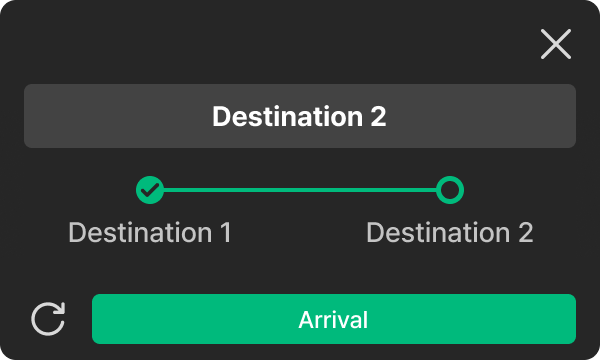
Stop Scenario
The X button at the top right stops the current mission scenario.
- Press it only when the mission must be cancelled — the robot stops following the current route.
Current Destination
Destination of the current step. When the mission moves to the next step, it changes to that step's destination.
Mission Steps
Shows the full mission route divided into steps. Completed steps appear as filled dots; the step in progress is shown in the highlight color.
Step Buttons
Use these to handle the current step yourself.
- Refresh · reloads the mission info.
- Arrival · marks the current step as arrived.
No Mission
When there is no active mission, the mission panel shows one of the three states below, depending on the robot's status.
Idle
The panel shows ‘Waiting for a Mission’ and the robot is ready. Press [Start Mission] on the right to assign one.
- Before a mission starts, the log area also shows only the
Notifications will appear here when a mission starts.notice.
Power Off · Robot Not Connected
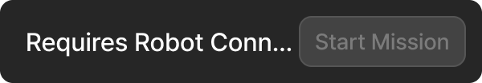
The panel shows ‘Requires Robot Connection’. The robot is powered off, or booting up to connect to the server, so [Start Mission] is unavailable.
- After powering on, booting can take up to 3 minutes.
Accept Missions Off
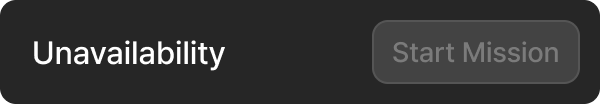
The panel shows ‘Unavailability’. Accept Missions is turned off for this robot, so [Start Mission] is unavailable.
- You can turn Accept Missions back on in Robot Settings from the header. → 7-1
04 · Missions
Map
Check the robot's current location and mission route on the map. It's the reference for judging “where it is now,” which is hard to tell from video alone.
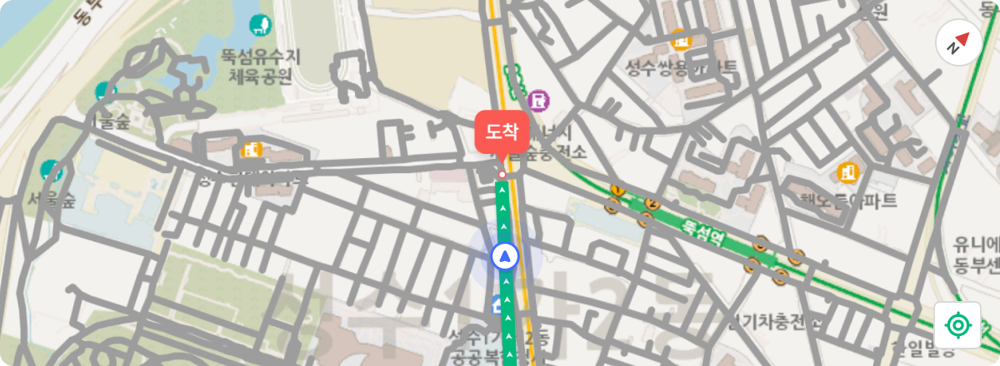
Map · Route · Destination
Shows the robot's current location, driving route (green line), and destination together.
Direction (Compass)
Indicates map orientation; click to reset the map to north-up.
Go to Current Location · Heading Up
Press to re-center the map on the robot and rotate it so the driving route points straight up the screen.
- Use it to return to following the robot after dragging the map elsewhere.
05 · Communication
Log & Voice Broadcast
Stacks events from the robot in chronological order, and below that broadcasts announcements through the robot's speaker. Use it to talk to pedestrians or recipients.
Alert Log History
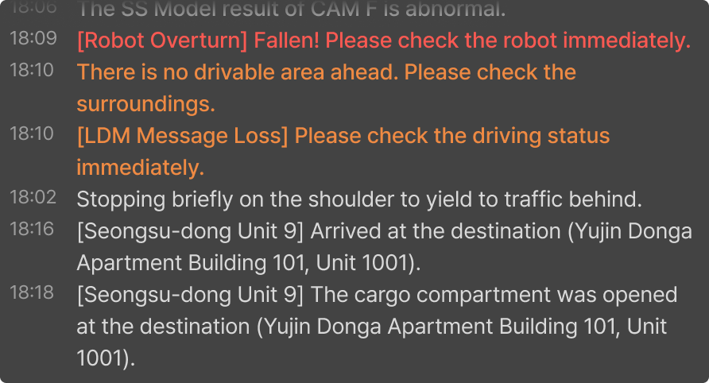
Alert Log History
Shows info and caution alerts raised while the robot performs its mission, in chronological order. Alerts that need attention are shown in orange or red.
- Before a mission starts, only
Notifications will appear here when a mission starts.is shown.
Voice Broadcast
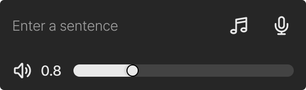
Text Broadcast
Reads the entered sentence aloud through the robot's speaker.
- As soon as you type text, the audio select · mic buttons on the right change to the [Broadcast Text] button.
Select Audio
Pick and broadcast a pre-registered announcement. Click to open the ‘Preset Audio Broadcast’ side panel on the right. → next page
Mic Broadcast
Sends the operator's voice to the robot's speaker in real time.
- While mic broadcast is on, other broadcast options are unavailable.
- The first time, allow microphone access in your browser. Without it, a permission prompt appears first.
Volume
The robot speaker's volume. It starts at the volume saved in Site Settings.
- If you change the volume while audio is playing, it applies from the next audio, not the one currently playing.
Live Listen · Mic Error Indicator
If the screen disconnects while Live Listen or Mic Broadcast is ON, the button shows Error and a caution message appears on the camera view.05 · Communication
Preset Audio Broadcast
Opens when you press the voice broadcast area's Select Audio(6-3). Tap a pre-registered announcement to send it immediately through the robot's speaker.

Repeat
Broadcasts the selected audio repeatedly. Turn it on when you need to keep announcing in crowded pedestrian areas. So it isn't left on by mistake, always turn it OFF when the situation is over.
Audio List
Tap an announcement in the list to broadcast it right away.
- To stop broadcasting, use [Stop Voice] in the voice broadcast area.
06 · Alerts
Alert Levels & Display Rules
Most alerts are collected in the Alert Log (6-1). Alerts that need urgent attention on site or in the control room are also shown on screen, and how they appear depends on urgency.
Level 0 / 1 — shown as a pinned popup at the top of the screen. It stays until you dismiss it.
Level 2 — an orange border briefly flashes on the camera view. Check the details in the Alert Log.
Level 0 / Level 1 — Alerts Requiring Action
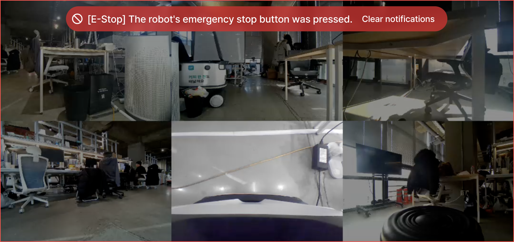
Pinned popup + red border
An alert that needs urgent attention on site or in the control room. The popup is pinned at the top and stays until you dismiss it.
- A red border is also shown on the camera view.
- Check the situation through the camera, then press [Dismiss Alert] on the right of the popup. The popup and red border disappear together.
Level 2 — Alerts Requiring Attention

Orange border fades after 3 s
An alert to keep an eye on. An orange border flashes on the camera view and disappears automatically after 3 seconds.
- It asks you to watch the situation rather than act immediately.
- Check what the alert was in the Alert Log (6-1).
07 · Settings & Recovery
Robot Settings Side Panel
Opens from the right when you press the header's Robot Settings(1-9). Use it to recover when the video misbehaves or the robot doesn't respond. Items further down have bigger effects, so always start from the top.

Accept Missions
A toggle that sets whether the robot is active for operation. Turn it ON when you want to operate the robot.
Restart Control Screen
Restarts only the video view. Use it when the control screen keeps loading, or data updates but the video doesn't appear.
Restart XAVIER
Use this when a mission is assigned and there is a sensor fusion issue.
- A camera was forcibly shut down
- Autonomous driving isn't working
- The robot stopped while driving
- ADS doesn't appear
Restart Cam
Use this when a specific camera freezes or a specific view isn't coming in. Restart only the cameras facing the direction with problems.
- Front, Right Restart Cam
- Left, Bottom Restart Cam
- Rear Restart Cam
WIFI
Turns the robot's WIFI on and off. WIFI is used only for extracting data after a dispatch, not during operation.
- After using WIFI, be sure to press ‘Turn Off WIFI’ so the robot operates on a stable LTE connection.
Reboot Robot
Reboots the entire robot. Use this only when nothing else works. It takes about 2–3 minutes to start back up.
- While rebooting, video · control · status info are all lost. First confirm the robot is stopped in a safe location.
08 · Situational Response
Crossings · Crosswalks
When the robot reaches a crossing or crosswalk, a crossing prompt appears automatically. The robot starts crossing only after you check the surroundings and signal and press [Cross].
Crossing Caution — No Traffic Light
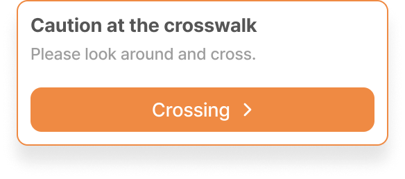
Crossing Caution
When the robot reaches a crossing, a [Cross] button appears. As the prompt “Check your surroundings before crossing” says, look around yourself, then press it.
Signalized Crosswalk — With Traffic Light Close-up
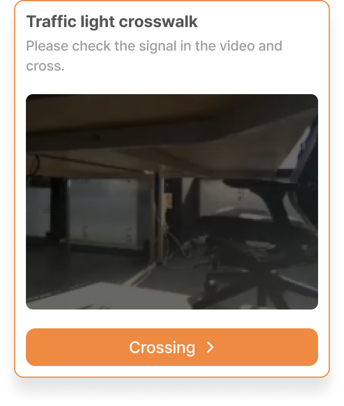
Signalized Crosswalk
At crosswalks with traffic lights, a traffic light close-up and the [Cross] button appear together . Check for a green light in the video, then press it.